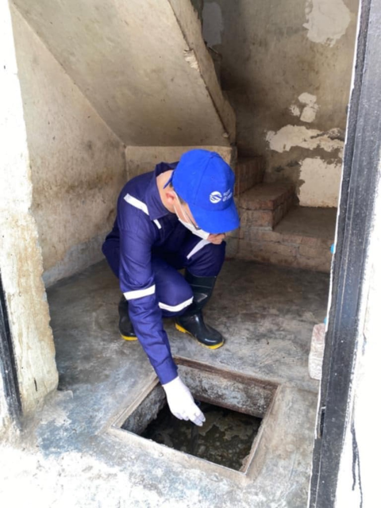
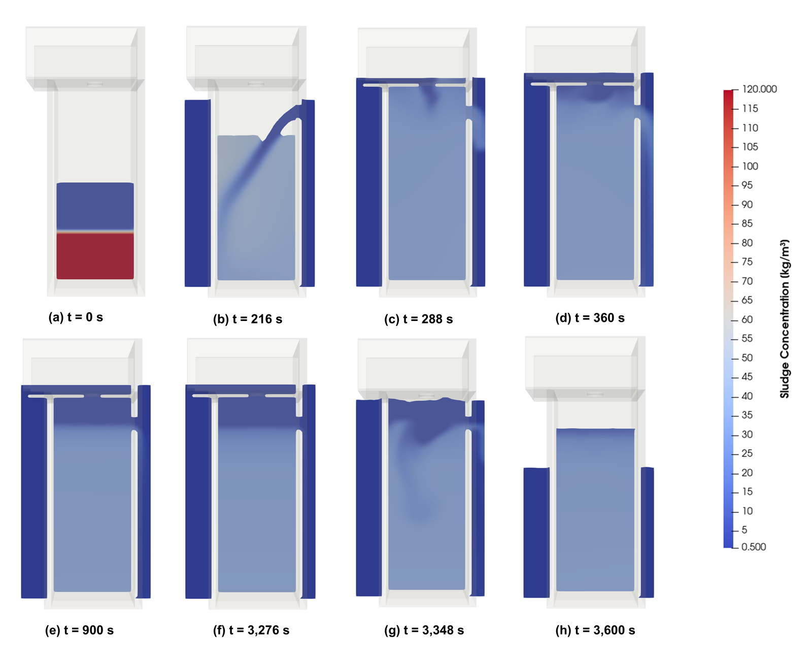
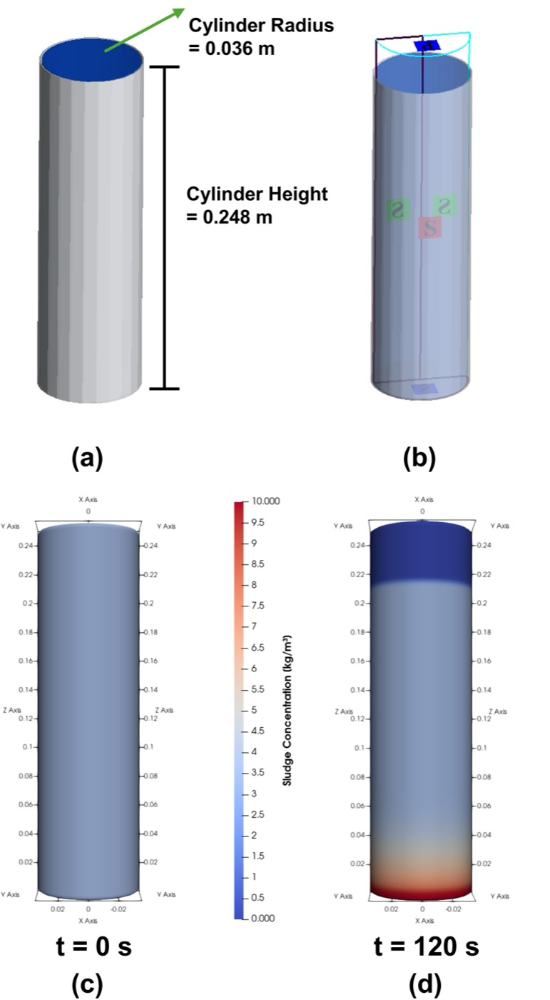

Most of the world's sanitation is not connected to a sewer. It sits in the ground underneath the household that uses it, in a pit latrine or a septic tank. That is fine until the water arrives. Zhe Zhan's research asks a question on-site sanitation was never designed to answer: when a flood comes, where does the waste go?
Starting in the pit

Sludge sampling during fieldwork. The physical and microbiological properties measured here are what the models are built on.
The work combines empirical fieldwork — sludge sampling and physical and microbiological analysis, in countries including India and Uganda — with numerical modelling. The fieldwork establishes what is actually in a pit and how it behaves; the modelling asks what happens to it under flood conditions nobody can stage on purpose.
One hour of flooding, simulated
Using computational fluid dynamics, Zhe simulated sludge washout from a pit latrine during a one-hour flood. The pit was represented on a single Cartesian mesh block with a cell size of 0.04 m. Floodwater stood at an elevation of 2 m at the start and end of the hour, rising to 3.3 m between 300 and 3,300 seconds.

The pit in cross-section through one hour of flooding, at 0, 216, 288, 360, 900, 3,276, 3,348 and 3,600 seconds. Colour shows sludge concentration in kilograms per cubic metre: the dense layer sitting at the bottom of the pit at the start is stirred through the water column and carried out.
The sequence shows the mechanism, not just the outcome. The sludge does not simply float away when the water rises; it is drawn into suspension, and what leaves the pit leaves as a dilute but substantial load spread through the floodwater people are standing in.
And afterwards
The flood is not the end of it. Zhe also modelled sludge settling in a cylindrical reservoir, 0.036 m in radius and 0.248 m high, starting from a sludge concentration of 3.42 kg/m³, to find how quickly disturbed sludge resettles once the flood has passed.

Batch settling in a cylindrical reservoir: the geometry and mesh, then sludge concentration at the start and after 120 seconds.
How fast solids resettle governs how long contamination stays mobile, and so how long after the water recedes a place remains hazardous.
Why it matters
Climate resilience for sanitation is usually discussed as whether a facility survives a flood. This work treats it as a question of what the facility releases during one, and how much. The aim is best practice for mitigating the risk of faecal contamination from flooded sanitation infrastructure, which only follows from being able to quantify contamination under different flood scenarios.
It also sits at the junction of two of our themes: the sanitation service chain, and the computational methods used across the group.
Sanitation and WASH · Data-driven and computational methods · Urban environmental health · Meet the researchers